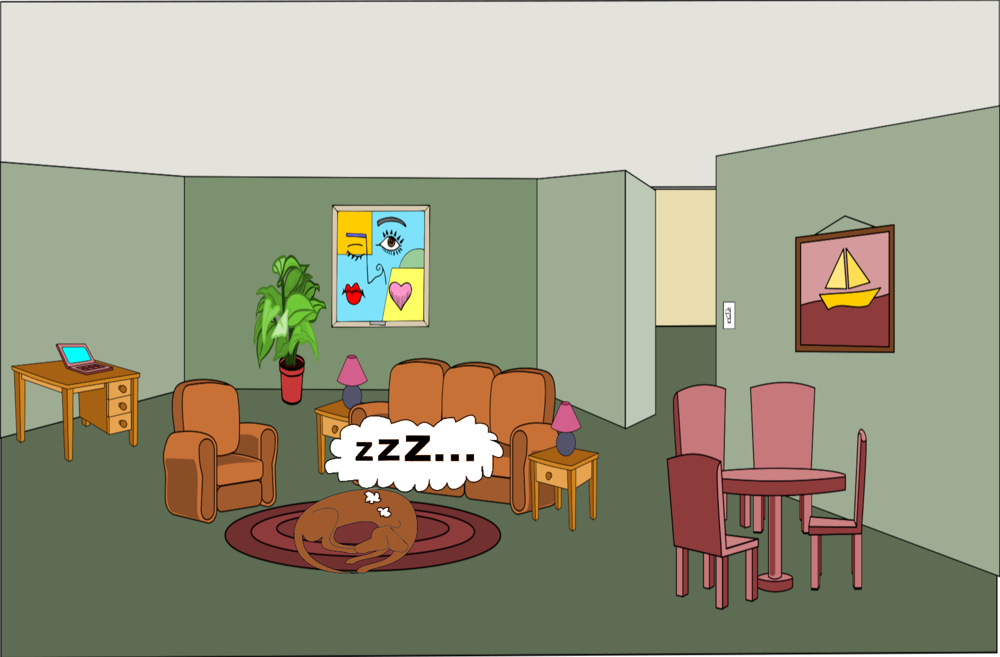

play sound
You have successfully taken care of your dog before playing any games. Since you properly cared for your dog you can now enjoy many hours of uninterrupted gaming while your dog peacefully sleeps on your floor.